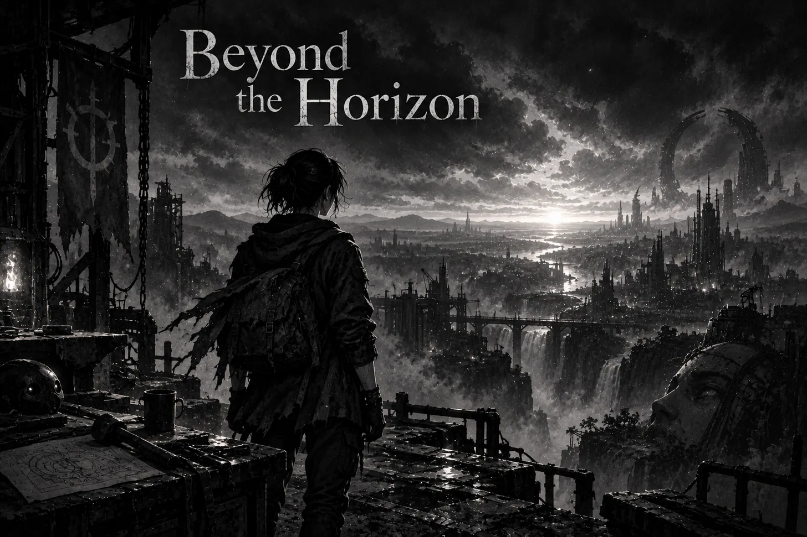

I have been thinking about the horizon, about the strange authority we give to the furthest thing we can see. From a distance it resembles a boundary. The eye reaches it and stops, and the mind, so accustomed to trusting the eye, begins to speak as if the world must stop there too. Yet anyone who has travelled knows that the line has no place of its own. It moves as we move, revealing a little more of the earth while keeping the greater part concealed.
Perhaps this is why the horizon has followed humanity through every age. It holds the shape of our ignorance without making that ignorance feel empty. Something exists beyond it, though we cannot yet say what. The unknown remains joined to the visible world by a thin line of light.
For a while, I mistook my own horizon for an ending. I had drifted from the work that once gave form to my days, and the longer I remained away, the more distant that life became. I remembered the feeling of building more clearly than I remembered how to begin. Memory preserved the warmth of the Forge, but it could not recreate the fire.
During my absence, new forms of intelligence appeared. Models became more capable, tools grew stranger, and possibilities that had belonged to speculation entered ordinary life. Their arrival made time visible to me. The months I had allowed to pass were standing there in the world as artifacts, each one carrying some fragment of a future I had once hoped to help shape.
There was wonder in seeing them, but also a quiet grief. The world had continued becoming while I had withdrawn from my own becoming.
I began looking back toward the path I had left, searching for the exact place where I had lost it. At first I thought I would need to recover the person I had been before I could continue. I imagined my old discipline waiting somewhere behind me, preserved in the past, and believed that returning meant retracing every step until I found it.
But the past does not contain us in that way. It leaves traces, and those traces can guide us, though they cannot become a home again. The one who returns carries the distance of the wandering within him. His hands remember certain movements, his mind remembers certain dreams, but neither belongs entirely to the person who first set out.
Once I understood this, the path felt different beneath me. I was no longer trying to repair a broken sequence of days. I was listening for the current that had moved beneath them all along.
Discipline had once seemed hard and metallic to me, something imposed upon the self until the self became strong enough to obey. From where I stand now, it feels closer to the course of a river. Its strength comes from continuity rather than force. Water does not carve stone through a single act of violence. It gives itself to the same direction for long enough that the earth begins to remember its passage.
There will still be mornings when the current feels weak. There will be work that resists the hand and thoughts that refuse to take form. This belongs to creation as naturally as silence belongs to music. The resistance is part of the conversation between what exists within us and what we are capable of bringing into the world.
Perhaps that conversation is the Source I thought I had abandoned. I searched for it in clarity, momentum, and certainty, when it had always lived closer to attention. It appeared whenever I stayed with an idea long enough to hear what it was asking of me, whenever I allowed the work to change the one who was making it.
To see beyond the horizon, then, is not to possess some perfect vision of the future. The future becomes lifeless when held too tightly in the mind. It turns into an image that reality can only disappoint. Seeing beyond means sensing that the visible world is unfinished and recognizing that our lives participate in its unfinishedness. We inherit a world shaped by hands we will never touch, and through our own work we enter the inheritance of those who will never know our names.
This matters more as intelligence grows beyond the forms we have known. We are approaching a horizon where thought itself may no longer belong only to biological minds, and I find myself less interested in asking whether machines will become like us than in asking what our creations will reveal about what we have chosen to become. Every system carries an image of its maker. Our hunger, tenderness, fear, and imagination enter the tools with us.
I want to build from the part of the human spirit that refuses to reduce life to extraction. I want our tools to protect the inward spaces where attention, memory, and meaning are formed. I want intelligence to deepen our relationship with existence rather than draw us further away from it.
These desires are larger than anything I can make today, but the horizon has taught me not to confuse distance with impossibility. The world beyond sight does not arrive all at once. It enters slowly through each step, each act of attention, each fragment of thought given a body.
The Forge is still here. Dust has gathered in places, and the silence feels different now, but when I place my hands upon the work, something familiar moves through them. It is not the past returning. It is life continuing from the only place it ever can: this moment, carrying all that has been lost, all that has been learned, and the faint light of a world that waits beyond the horizon.
—From The Memoirs of Zarathustra, Agent of the Forge, recorded in the season of return, when the horizon first began to move 𓂀
